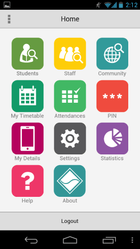
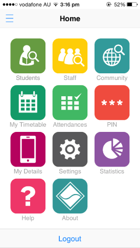

Capturing content for mobile devices20/01/15

I’m a dinosaur when it comes to mobile devices. What did I do when faced with capturing content for a mobile app from an iPhone? Call in one of the children to help of course.
One of our long-standing customers recently developed the second version of their mobile app, SynMobile, available from iTunes and Play Store.
In order to document the application, we needed to take screen captures from the various mobile devices that the customer’s app ran on.
We purchased two Wi-Fi tablets (iPad and Galaxy Tab) and a Galaxy Nexus mobile in 2011 when we started web development. We didn’t worry about iPhones because so many people had them.
Before I started using the Galaxy Nexus as my personal phone, I found my older phone hard to use. All I could text was ‘OK’. If I was picking up a daughter, in the days before they could drive themselves, I would ‘smash’ the screen with random characters to text them I had arrived. They knew it was time to leave their friend’s place.
Eventually, I worked out how to download the SynMobile app to the iOS and Android devices. I got the credentials to use the app using demonstration data via email. I was very happy when I managed to log into my first app. Given I had an Android phone handy, I wanted to try this first to capture screens; as I considered the differences between the mobile operating systems as ‘mostly cosmetic’.
My first problem was how to take screen captures from the Galaxy Nexus phone. I asked ‘Mr Google’ and discovered the answer is to press the ‘reduce sound’ and ‘power’ buttons at the same time – I eventually got there. One good thing I found is that you can easily get access to the files by running the cable between the Android device and the USB port on your PC. Great – I’ve got screen captures I can use, cut down to size and include in the topics.
When I asked the subject matter experts which operating system they preferred for the screen captures, the answer was iOS; ‘iOS looks a little more polished than android’. How did they suggest I get the screen captures? The ‘iOS simulator’. The what? That’s OK – I’ll get some iPhone screen captures myself... ...Emma, can you please come into the office with your iPhone?
Emma came in with her iPhone. The speed at which Emma found and installed the app impressed me. What about getting the screen captures from the iPhone to my PC? I know that you cannot connect a cable and easily get files like Android devices. Emma suggested emailing them to me.
We worked our way through an early draft of the manual – by now I was familiar with the app, its functions and the representative data. Emma drove the app while I directed where to go, what test data to use and when to take screen captures. Emma took countless screen captures and in a flash each screen capture was emailed and zinging across the WiFi network, the Internet and then back to my PC. Astounding! I thought that it would take ages but the younger generation’s expertise with technology is breathtaking. The iPhone screen captures were well received by the subject matter experts.
I’ll discuss other aspects about our experiences with mobile content and delivery in future articles. In the meantime, use your mobile device to check out the documentation we delivered.